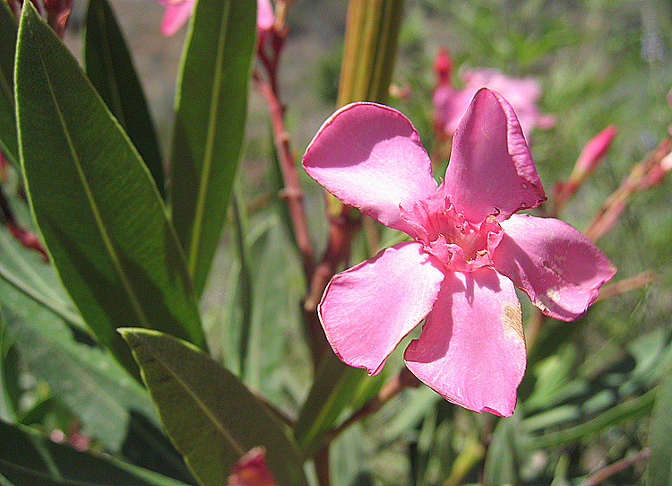
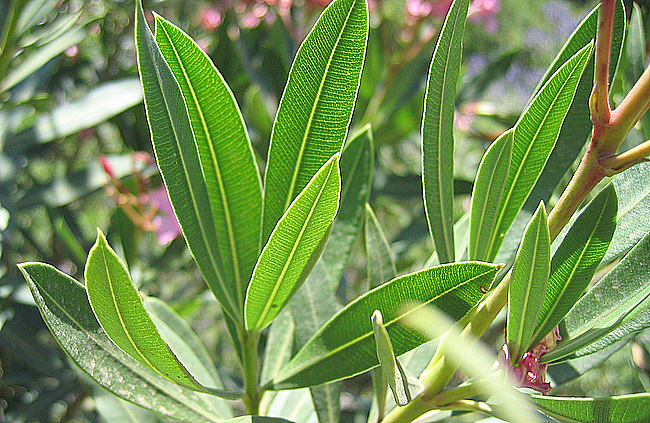
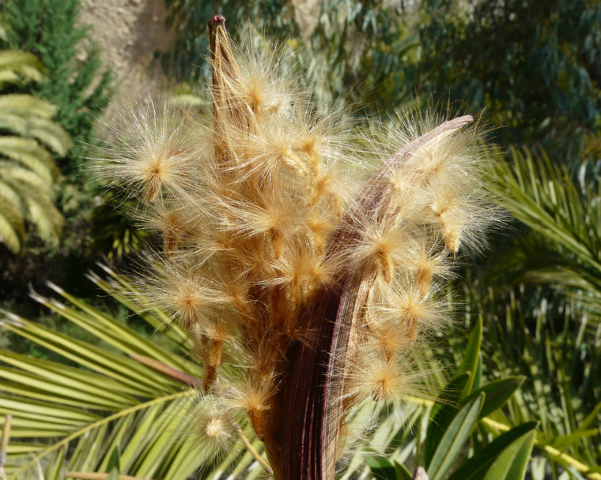
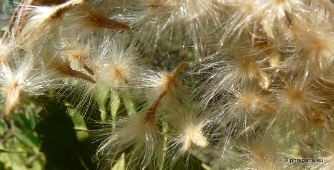

| PHRYGANA | Fauna | Flora |
additions nouveautés |
espèces species |
contact -
info - commentaires phrygana1 (at) gmail.com |
| diversité crétoise -- Cretan diversity | Galles et mines | ||||
| Nerium oleander subsp. oleander L. |
| 72 | Flora | APOCYNACEAE | Nerium L. |
 Nerium oleander Agios Ioannis 07 juillet 2008 |
| en: Oleander fr: le Laurier-rose | |
| Feuilles: opposées, coriaces, vert franc, longues de 70 à 140 mm, allongées et terminées en pointe, courtement pétiolées. | |
| Fleurs: rose foncé à rose clair, blanches, groupées à l'extrémité des tiges, longues de 30 - 40 mm, légèrement parfumées. | |
| Fruit: une capsule allongée (8 - 18 cm), brun rougeâtre, s'ouvrant longitudinalement. | |
| Hauteur: 100 - 400 cm | Type biologique: nanophanérophyte sempervirent cespiteux |
| Floraison: avril mai juin juillet août | |
| Altitudes: 0 - 500 m | |
| Statut en Crète: indigène -- native | |
| Biotopes en Crète: fonds de vallées, sources, sables maritimes; souvent planté pour l'ornementation (bords de routes, parcs et jardins). | |
| Distribution: région Méditerranéenne orientale | |
| Espèce héliophile. | |
| Note: toutes les parties de la plante sont vénéneuses. | |
| Il existe de nombreux cultivars dont certains à fleurs doubles, sélectionnés pour leurs couleurs ou leur parfum. | |
|
 Nerium oleander Agios Ioannis 07 juillet 2008 |
|
 Nerium oleander Agia Galini 26 février 2010 |
|
 Nerium oleander Agios Ioannis (district d'Amari 19 octobre 2011 |
| 24 octobre 2011 |
| © paul fontaine -- © Phrygana.eu 2007 -- 2013 |